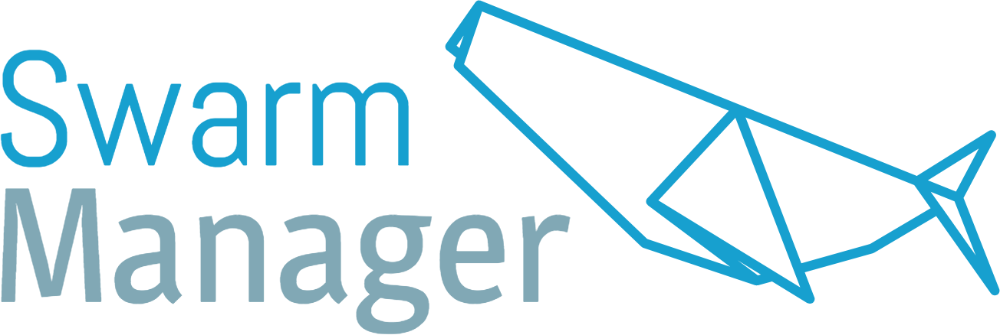

<mat-sidenav-container class="outer-container">
  <mat-sidenav #sidenav mode="{{getNavbarMode()}}" opened="{{!screenService.isSmall()}}"  class="navbar-container">
    <div class="logo-area">
      <div class="logo">
        
      </div>
      <div class="user">
        <app-user></app-user>
      </div>
    </div>
    <div class="navbar">
      <div class="navbar-option" routerLink="navigationItem.link" *ngFor="let navigationItem of navigationItems" routerLinkActive="active">
        <div class="navbar-option-text">
          <i class="material-icons icon">{{navigationItem.icon}}</i>
          <span class="text">{{navigationItem.name}}</span>
        </div>
      </div>
    </div>
  </mat-sidenav>
  <mat-toolbar color="primary" class="header-container">
    <i *ngIf="screenService.isSmall()" class="material-icons icon navbar-open" (click)="sidenav.open()">menu</i>
    <header>
      <div>
        <i [class]="showBackArrow()" (click)="goBack()">arrow_back</i>
        <h4 class="text">{{getSelectedViewName()}}</h4>
      </div>
    </header>

  </mat-toolbar>
  <main class="shell-content">
    <ng-content></ng-content>
  </main>
</mat-sidenav-container>
